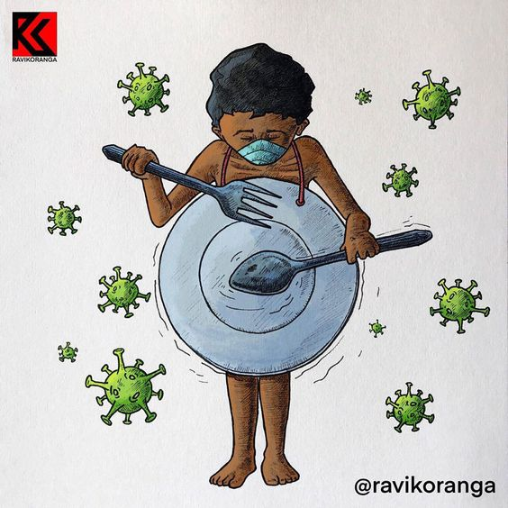
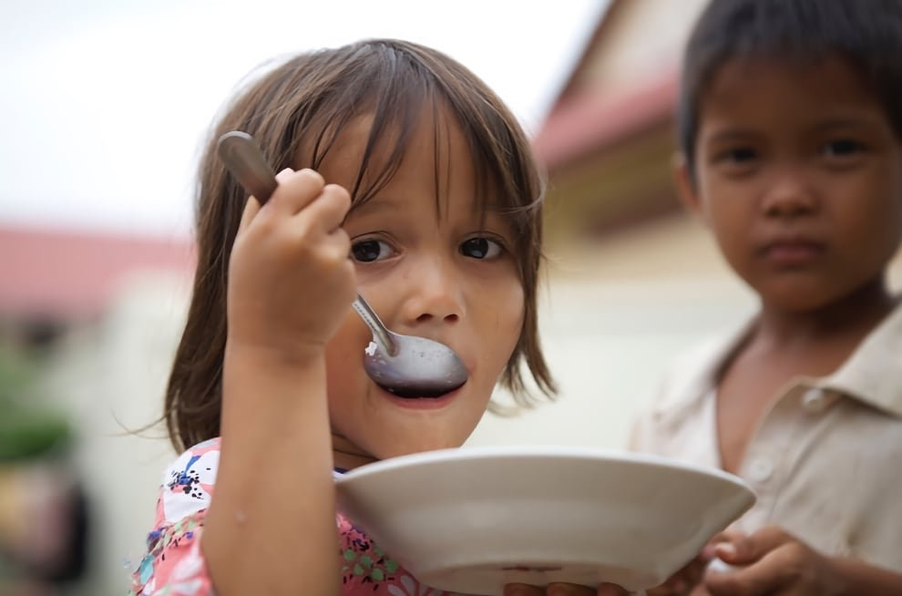

Malnutrition is the condition that develops when the body is deprived of vitamins, minerals and other nutrients it needs to maintain healthy tissues and organ function. It usually occurs in people who are either undernourished or overnourished.
Undernutrition occurs when not enough essential nutrients are consumed or when they are excreted more rapidly than they can be replaced. It manifests in four broad forms: Wasting, Stunting, Underweight, and Micronutrient deficiencies.
Overnutrition occurs in people who eat too much, eat the wrong things, don't exercise enough or take too many vitamins or other dietary replacements.
About 1 percent of children in the United States suffer from chronic malnutrition.

